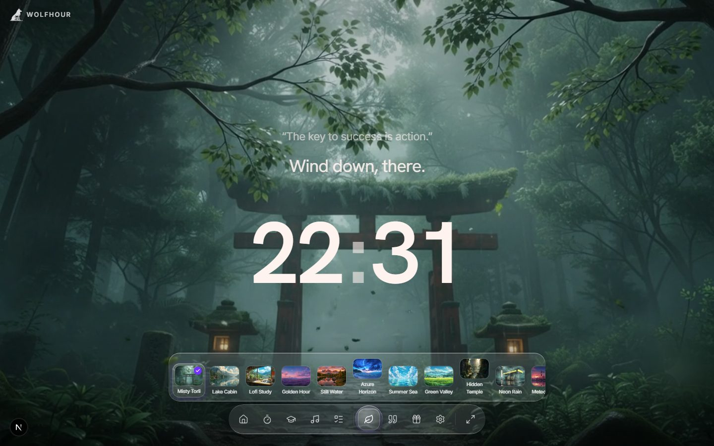
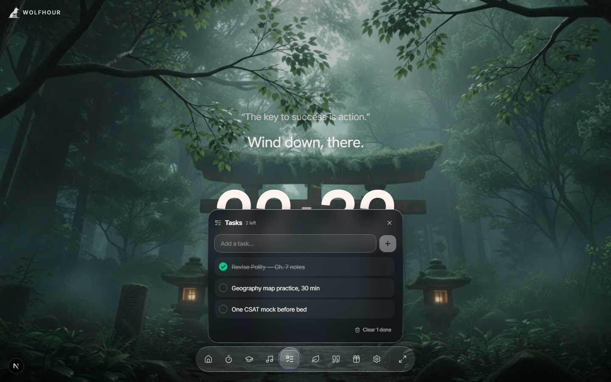
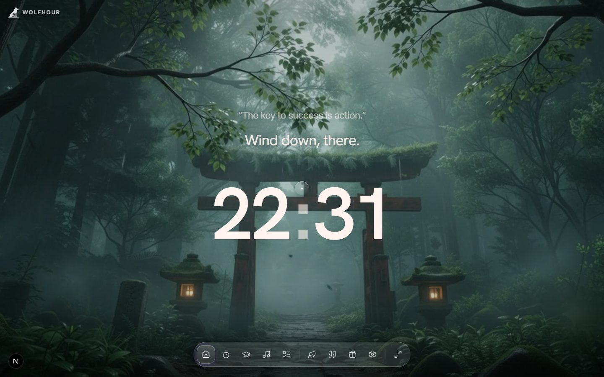

Everything orbits
around your focus.
Scroll through the hour, frame by frame.

Pick your world
Eleven live cinematic scenes — misty torii, lake cabins, golden hours, neon rain. Each one breathes behind your clock instead of sitting frozen.
- Real video, not a wallpaper
- Scene follows you across every mode

A timer that feels like a ritual
25 on, 5 off, world muted. Focus blocks, short and long breaks, and a count-up stopwatch — one tap apart, ending in a soft two-note chime instead of an alarm.
- Classic 25/5/15 pomodoro rhythm
- Stopwatch for open-ended sessions

See where your hours really go
Study tracking for people with an exam date. Per-subject stopwatches feed daily trend charts, so a flatlining subject is visible — not hidden inside one reassuring total.
- Goals, streaks & exam countdown
- Today / week / month analytics per subject

Mix your own quiet
Rain, ocean, café hum, fireplace — 22 sounds across five groups, layered with independent volumes. Generated live in your browser, so there's no loop seam to catch your ear.
- Nature · Places · Instrumental · Lo-Fi · Noise
- Your blend keeps playing in every mode

A quiet list, not a second job
Jot the day's three things, check them off, clear the done pile in one tap. No projects, no labels, no productivity homework.
- Lives one tap away in the dock
- Daily quotes & badges ride along

A clock worth staring at
Between sessions the dashboard rests: a greeting, a quote, and a big beautiful clock in your pick of faces — flip, LED, LCD, glitch, ember.
- Clock & font styles to match your scene
- Fullscreen one tap away